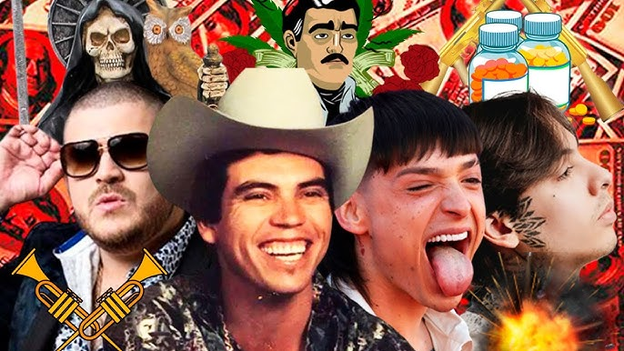
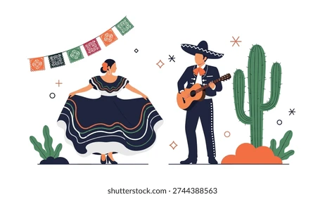

La música regional mexicana, especialmente los corridos, es un género muy representativo de la cultura popular en México. Los corridos son canciones narrativas que cuentan historias reales o ficticias sobre personajes, eventos históricos, hazañas o situaciones de la vida cotidiana.

Los corridos surgieron en el siglo XIX y se popularizaron durante la Revolución Mexicana, donde servían como una forma de informar al pueblo sobre batallas, héroes y acontecimientos importantes. Eran como “periódicos cantados” que transmitían noticias en una época donde muchos no sabían leer. Con el tiempo, este estilo se mantuvo vivo y fue adaptándose a nuevas generaciones.
Hoy en día, los corridos han evolucionado hacia estilos más actuales como los “corridos tumbados”, popularizados por artistas como Peso Pluma y Natanael Cano. Estos mezclan elementos del regional mexicano con géneros urbanos como el trap o el hip-hop, atrayendo a un público joven.
Los corridos siguen siendo una forma importante de expresión cultural en México. Reflejan la realidad social, las aspiraciones y los conflictos de la gente. A pesar de las críticas por algunos de sus contenidos, continúan siendo muy populares y forman parte esencial de la identidad musical mexicana, manteniendo viva una tradición que ha pasado de generación en generación.
Dentro de la música regional mexicana existen múltiples géneros, cada uno con características propias. El mariachi es probablemente el más reconocido internacionalmente, con trompetas, violines y trajes charros. El norteño, por su parte, destaca por el uso del acordeón y el bajo sexto, con letras que suelen narrar historias cotidianas. La banda sinaloense utiliza instrumentos de viento como trombones y clarinetes, creando un sonido potente y festivo. También están los corridos, que cuentan historias (a veces épicas o trágicas), y los rancheros, que expresan emociones intensas como el amor, el desamor o el orgullo. En tiempos recientes, han surgido variantes modernas como los corridos tumbados, que mezclan lo tradicional con influencias urbanas.
Uno de los elementos más distintivos de la música regional mexicana es su enfoque narrativo. Las canciones suelen contar historias muy concretas: amores imposibles, traiciones, migración, vida en el campo, lucha personal o incluso relatos de personajes históricos o contemporáneos. En los corridos, por ejemplo, se construyen verdaderas crónicas musicales que pueden funcionar como una especie de “periodismo cantado”. Las letras tienden a ser directas, emotivas y fáciles de conectar con el público, lo que explica su enorme popularidad. Además, el lenguaje utilizado suele ser cercano, incorporando modismos y expresiones regionales que refuerzan la identidad cultural.
La música regional mexicana no es solo entretenimiento; es una forma de identidad y pertenencia. Se escucha en celebraciones familiares, fiestas patronales, reuniones sociales e incluso en momentos de duelo. Ha sido una herramienta para preservar tradiciones y transmitir valores de generación en generación. También ha servido como medio de expresión para comunidades que encuentran en estas canciones una manera de contar su realidad. En el contexto migratorio, especialmente en Estados Unidos, este tipo de música se convierte en un vínculo emocional con el país de origen, reforzando la nostalgia y el sentido de comunidad.

En los últimos años, la música regional mexicana ha experimentado una transformación importante. Artistas jóvenes han fusionado sonidos tradicionales con géneros como el hip-hop, el trap y el pop, logrando atraer a nuevas audiencias sin perder la esencia original. Gracias a plataformas digitales, estos estilos han alcanzado una audiencia global, rompiendo barreras culturales y lingüísticas. Hoy en día, la música regional mexicana no solo domina en México, sino que también tiene una fuerte presencia en rankings internacionales, mostrando que una tradición profundamente local puede convertirse en un fenómeno global sin perder su identidad.